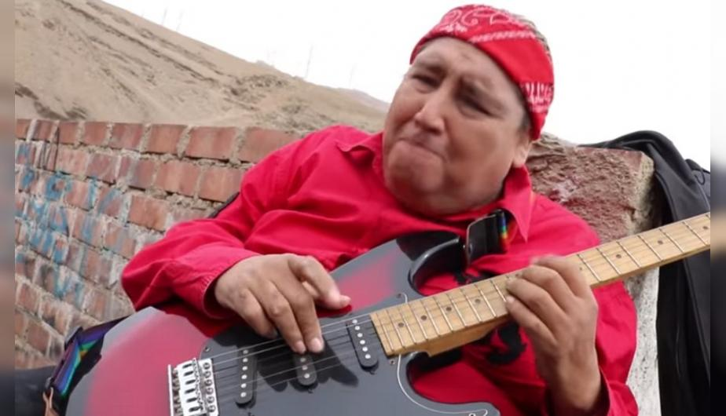

Tongo nació el 24 de septiembre de 1957 en el distrito de El Tambo, una ciudad ubicada en la provincia de Huancayo, departamento de Junín, Perú. Fue registrado el 11 de abril del mismo año debido a los trámites de certificación.1 Por ser hijo único, migró a Lima para ganarse la vida como vendedor. Sus primeras canciones fueron interpretadas por el grupo Kiwishow. En 1981 forma el Grupo Imaginación. A finales de la década de 1990 alcanzó la fama con los temas "La pituca" y "Sufre peruano, sufre". En 2001 interpretó la canción para recaudar fondos a los afectados de Mesa Redonda, sin embargo, las acusaciones terminaron por interrumpir su carrera artística.2
En 2007 cuando la cumbia tenía cabida en la radio y la televisión, a través de la súbita muerte de los integrantes de Néctar, vuelve a resaltar en la escena con una polémica presentación en el programa de Jaime Bayly. En El francotirador promocionó la versión en idioma inglés de su canción "La Pituca". También se realizó versiones en otros idiomas. En marzo de 2007 se presentó en las discotecas del Balneario de Asia, donde cantó sus temas más representativos. También se presentó en 2011 y 2016.
En junio de 2007 atravesó un momento de preocupación cuando su madre, Florencia Alanya Flores, sufrió un accidente al caerse en su casa, fracturándose la cadera y el brazo derecho, lo que se complicó aún más por sufrir de insuficiencia cardíaca y renal. Poco tiempo después, ella fallecería. En 2009 Tongo sufrió diabetes. Grabó un álbum titulado El padrino en homenaje a Jaime Bayly, conductor del programa televisivo "El Francotirador", y donde se encuentra su tema La Pituca, en versión anglosajona. Además interpretó una canción dedicada llamada Pero que Jaime pa’ presidente. La amistad entre Jaime y Tongo lo convirtió, momentáneamente, en el centro de la atención de la farándula peruana.
A partir del tema La pituca en inglés en 2007, Tongo (bajo el seudónimo de "Le Tongué") se dedicó a versionar canciones populares en su país. Uno de ellos fue Baby, que ganó popularidad en las discotecas de Lima. También interpretó Let It Be, se planeó estrenarse en 2009, pero fue lanzado en 2011 al conseguir los permisos. En 2012 sacó una versión de Gangnam Style. A inicios de 2016 lanza un cover de Sorry y meses después lanza Work y Sweet Child O'Mine. A finales de 2016 lanzaría Chop Suey, ganándose la confianza de los medios internacionales. En febrero de 2017 lanza un cover de Numb. En abril de ese mismo año lanza un cover de Rap God14 y a finales de Mayo saco un cover de Hotel California. En julio sacó un cover de Pumped Up Kicks16 y recientemente en Agosto, In The End, de Linkin Park, en homenaje al fallecido Chester Bennington. Varias canciones versionadas fueron publicadas en su canal de YouTube. El estilo Tonglish mezcla el rock cómico con el inglés deliberadamente rudimentario para las canciones en ese idioma.1318 Admite que es "el único en el Perú y en el mundo que se ha atrevido a cantar covers sin pronunciar bien el inglés". Desde 2016 son acompañados por los vídeos musicales, editados por Juan García.